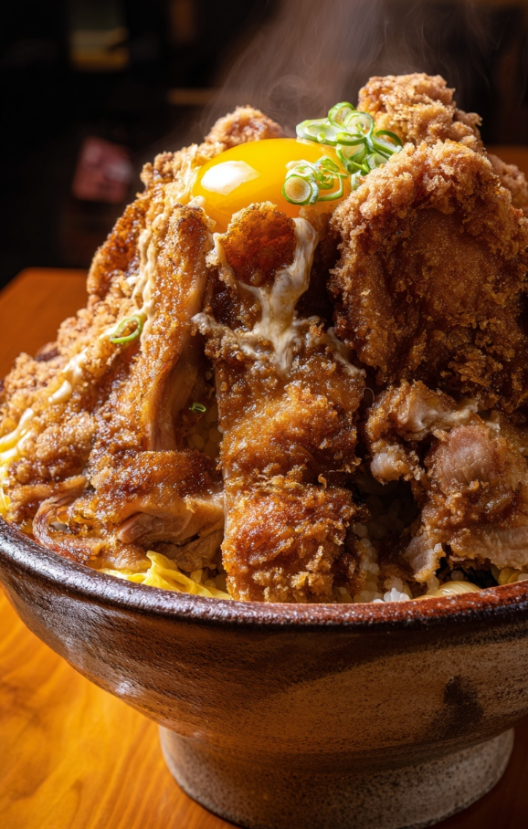

Odin Recipes
Home
Tonkatsu

Description
Tonkatsu Don is a Japanese rice bowl dish made by topping steamed rice with a crispy, deep-fried pork cutlet (tonkatsu), gently simmered in a savory-sweet sauce made with soy sauce, dashi, mirin, and sugar, along with onions and beaten eggs. The egg is poured over the cutlet and cooked just until soft-set, creating a silky, flavorful topping that soaks into the rice.
Ingredients
- 2 pork loin cutlets (boneless, about 1cm thick)
- Salt and pepper
- 1/2 cup flour
- 1 egg, beaten (for breading)
- 1 cup panko breadcrumbs
- Oil for deep frying
- 1/2 onion, thinly sliced
- 3/4 cup dashi stock (or water + dashi powder)
- 1 1/2 tbsp soy sauce
- 1 tbsp mirin
- 1 tbsp sugar
- 2 eggs, beaten
- Cooked Japanese rice (for serving)
Steps
- Season pork cutlets with salt and pepper.
- Dredge each cutlet in flour, dip in beaten egg, then coat with panko breadcrumbs.
- Heat oil in a pan and deep-fry the cutlets until golden brown and cooked through. Drain and slice into strips.
- In a separate pan, combine dashi, soy sauce, mirin, sugar, and sliced onions. Simmer until onions are soft.
- Place sliced cutlet on top of the simmering onions. Pour beaten eggs over and cover. Cook on low heat until the eggs are just set.
- Serve over a bowl of hot rice, spooning sauce and egg mixture on top.